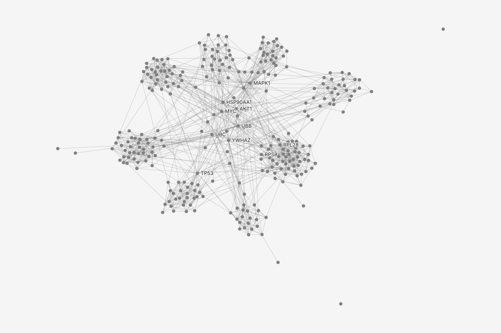
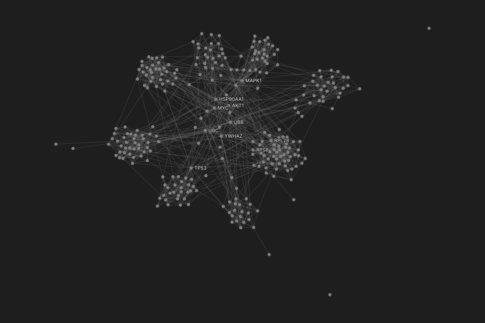

State fixture: State/Canvas/LoadStepSizeRead
| from_account | to_account | amount currency, USD | timestamp date, Mar 1 to Mar 31, UTC |
|---|---|---|---|
| ACC-863727 | ACC-173956 | 5.04 | 2026-03-29T21:09:09Z |
| ACC-789516 | ACC-157047 | 8.97 | 2026-03-25T21:53:13Z |
| ACC-171252 | ACC-393859 | 44.63 | 2026-03-11T18:12:38Z |
| ACC-502342 | ACC-393859 | 38.01 | 2026-03-16T20:25:38Z |
| ACC-502342 | ACC-527694 | 14.80 | 2026-03-12T02:10:34Z |
State fixture: State/Canvas/LoadStepSizeRead with a caution (was State/Canvas/LoadStepBlocked)
| line | protein_a | protein_b | source | confidence text |
|---|---|---|---|---|
| 29 | PSMA4 | PSMD2 | coexpression | NA |
| 31 | PSMA5 | PSMA7 | coexpression | NA |
| 44 | PSMA5 | PSMD12 | coexpression | NA |
| 52 | PSMA6 | PSMD1 | coexpression | NA |
| 64 | PSMA7 | PSMB6 | coexpression | NA |
State fixture: choose-policy on State/Canvas/LoadStepSizeRead
| line | protein_a | protein_b | source | confidence number |
|---|---|---|---|---|
| 2 | PSMA1 | PSMB4 | coexpression | 0.840 |
| 3 | PSMA1 | PSMB4 | textmining | 0.570 |
| 5 | PSMA1 | PSMB10 | databases | 0.800 |
| 6 | PSMA1 | PSMB10 | textmining | 0.742 |
| 7 | PSMA1 | PSMB10 | experiments | 0.398 |
State fixtures: State/Canvas/LoadStepHuge, State/Canvas/LoadStepNoAutosave
| citing text | cited text |
|---|---|
| 6028459 | 3792039 |
| 6028459 | 5701201 |
| 6055542 | 3557818 |
| 6055542 | 3843443 |
| 5953895 | 5080322 |
State fixture: State/Canvas/LoadStepReading
| citing text | cited text |
|---|---|
| 6028459 | 3792039 |
| 6028459 | 5701201 |
| 6055542 | 3557818 |
| 6055542 | 3843443 |
| 5953895 | 5080322 |
State fixture: State/Canvas/LoadStepError
| FromNodeId text | ToNodeId text |
|---|---|
| 3858241 | 956203 |
| 3858241 | 1324234 |
| 3858241 | 3398406 |
| 3858241 | 3557384 |
| 3858241 | 3634889 |
State fixture: State/Canvas/LoadStepCrossesOnAdd, with nothing crossed (the April file crosses no limit)


State fixture: State/Canvas/LoadStepSizeRead, a self-describing format
| id | module category | log2FoldChange number |
|---|---|---|
| PSMA1 | Proteasome | -0.85 |
| PSMA2 | Proteasome | 0.48 |
| PSMA3 | Proteasome | 0.38 |
| PSMA4 | Proteasome | -0.87 |
| PSMA5 | Proteasome | -0.67 |
State fixture: State/Canvas/Ideal after a load, the evidence file read with NA as missing and Keep each; the two unconnected proteins are not in the kit drawing yet


State fixture: Version history mode with one data version open (waits on graphty-element: Version history)